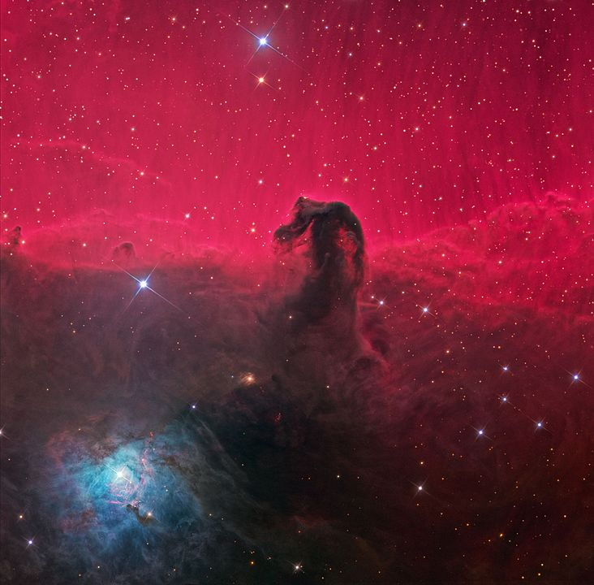
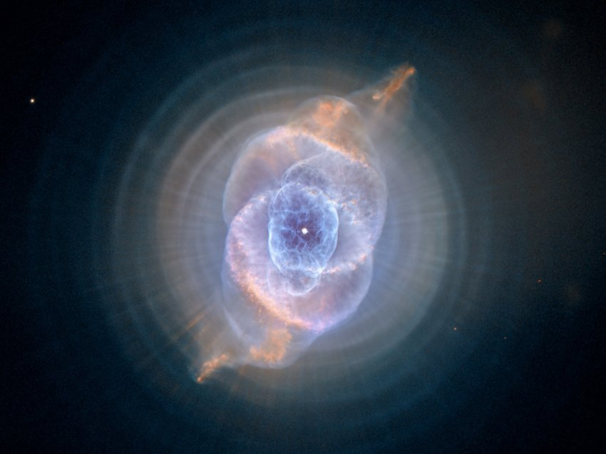
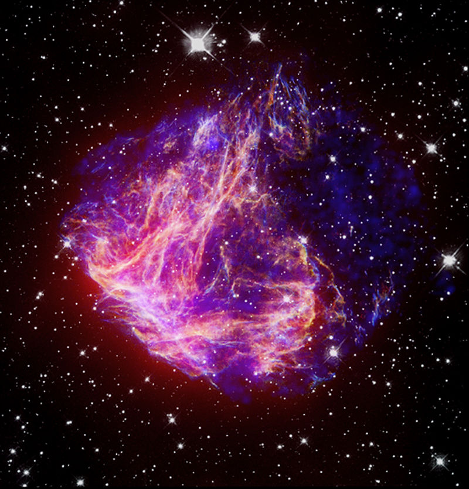

Back to home
Details
Emission Nebula
An emission nebula is a cloud of high temperature gas. Within this type of nebula, a star energizes the atoms in the cloud with ultraviolet radiation. As these atoms fall back to lower energy states, they emit radiation. The process is similar to that of a neon light. This causes the nebula to glow. Emission nebulae tend to be red in color because of the abundance of hydrogen. Additional colors, such as blue and green, can be produced by the atoms of other elements, but hydrogen is almost always the most abundant. A fine example of an emission nebula is the Orion Nebula (M42).


Reflection Nebula
A reflection nebula differs from an emission nebula in does not emit radiation of its own. It is a cloud of dust and gas that reflects the light energy from a nearby star or group of stars. Reflection nebulae are frequently the sites of star formation. They usually tend to be blue in color because of the way that the light is scattered. Blue light is scattered more efficiently. The Trifid Nebula (M20) in Sagittarius is a good example of a reflection nebula.
Dark Nebula
A dark nebula is a cloud of dust that blocks the light from objects behind it. They are very similar to reflection nebulae in composition and look different primarily because of the placement of the light source. Dark nebulae are usually seen together with emission and reflection nebulae. The Horsehead Nebula in Orion is probably the most famous example of a dark nebula. It is a dark region of dust in the shape of a horse's head that blocks the light from a much larger emission nebula behind it.
Planetary Nebula
A planetary nebula is a shell of gas produced by a star as it nears the end of its life cycle. Their name can be a bit misleading. They actually have nothing to do with planets. These nebulae were given this name because they often look like planets due to their round shape. The outer shell of gas is usually illuminated by the remains of the star at its center. The Ring Nebula (M57) in Lyra is one of the best examples of a planetary nebula.
Supernova Remnant
Supernova remnants are created when a star ends it life in a massive explosion known as a supernova. The explosion blows a large amount of the star's matter out into space. This cloud of matter glows with the remains of the star that created it. One of the best examples of a supernova remnant is the crab Nebula (M1) in Taurus. It is illuminated by a pulsar which was created by the supernova.
